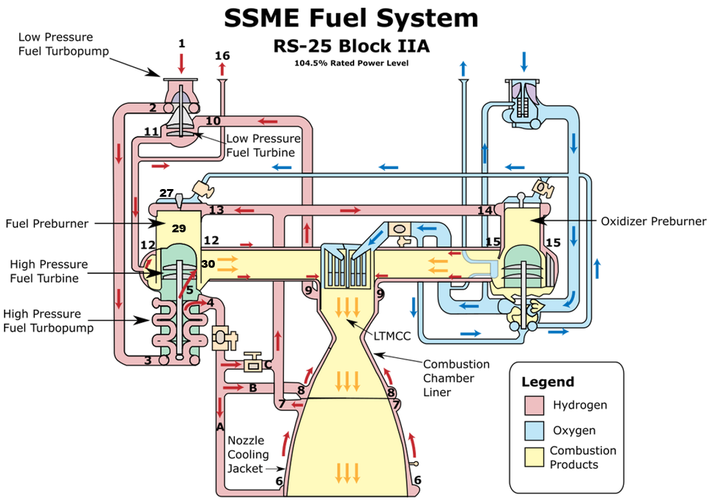
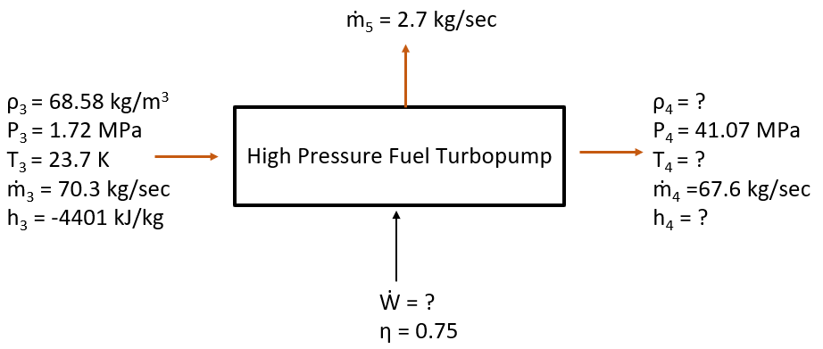
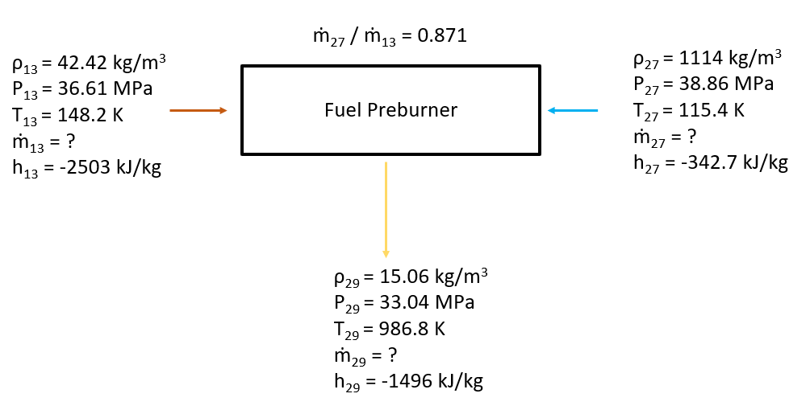
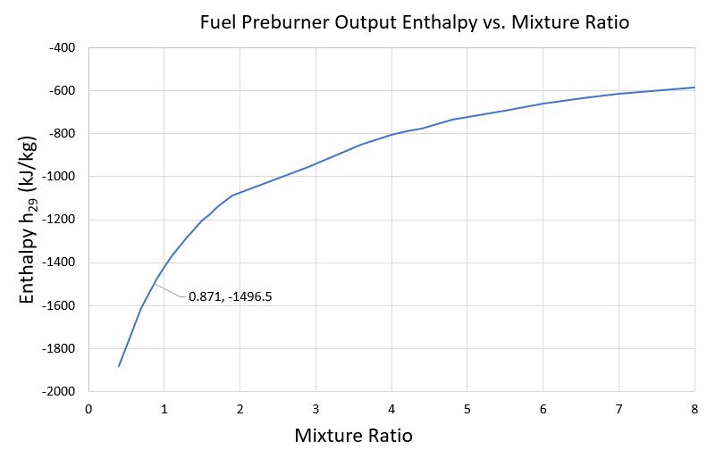
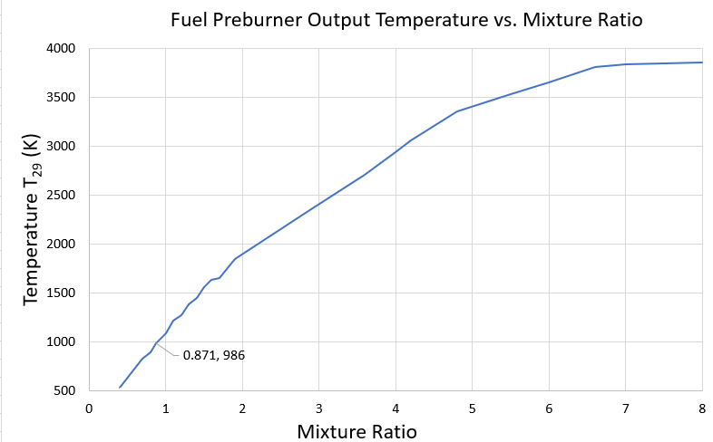
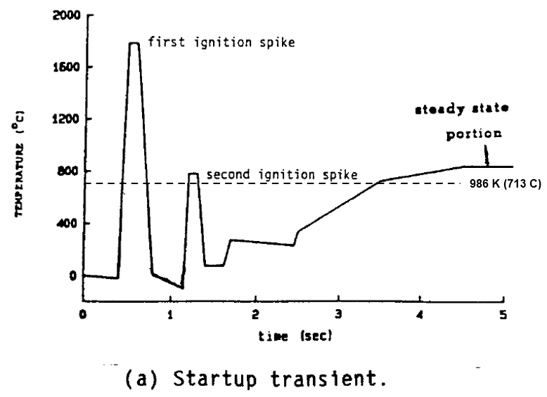
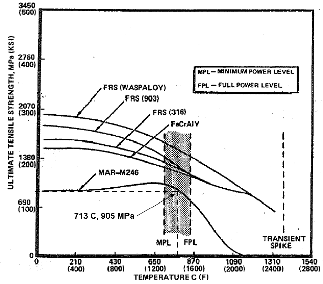
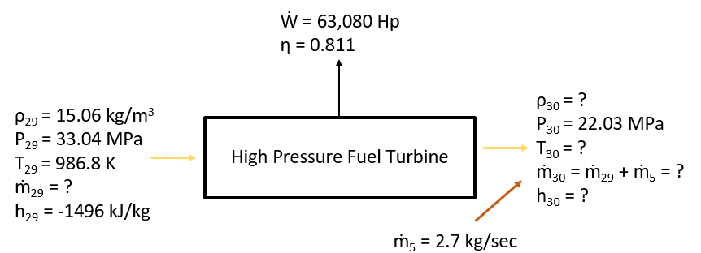
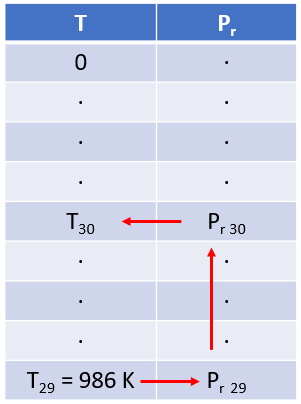

Figure 4.2.1: SSME High Pressure Fuel System [1]
High Pressure Fuel Turbopump
We now turn our attention to the High Pressure Fuel Turbopump. Liquid hydrogen enters this device at Station 3 with a known temperature and pressure. The desired pressure on the output side of the pump (Station 4) is known, but all other output state variables are unknown. The input and output mass flow rates are known. In this case the mass flow rate at Station 4 is slightly less than the mass flow rate at Station 3 due to a small quantity of hydrogen that is diverted to cool the High Pressure Fuel Turbine (Station 5). Know input and output conditions are depicted below on Figure 4.2.2.

Figure 4.2.2
Once again the task is to determine the amount of power required to drive this pump, along with the state variables at the pump exit. The procedure utilized for this calculation is identical to the procedure described for the Low Pressure Fuel Turbopump in Section 4.1. Results of the calculation are tabulated below. The predictions made by the model are accurate to within 4% of measured values.
| Calculated | Actual Value[2] | Relative Error (%) | |
|---|---|---|---|
| $T_4$ $[K]$ | 53.12 | 51.50 | 3.14 |
| $\dot W$ $[Hp]$ | 60,769 | 63,080 | 3.66 |
Table 4.2.1
After determining the amount of power required to drive the pump, we must find a means to generate that power. This accomplished via the High Pressure Fuel Turbine. This turbine differs significantly from the Low Pressure Fuel Turbine described in Section 4.1. The high pressure turbine is gas-driven, where the low pressure turbine is is driven by supercritical hydrogen. Prior to analyzing the high pressure fuel turbine, we must first develop a model to predict the thermodynamic properties of the gas entering the turbine blades from the fuel preburner.
Fuel Preburner
The fuel preburner is a combustion chamber that converts liquid hydrogen and oxygen into a gaseous mixture of hydrogen and water vapor that is used to drive the blades of the High Pressure Fuel Turbine. The desired pressure in the preburner is known, along with the temperature, pressure, and mixture ratio of the reactants entering at Stations 13 and 27. The combustion model developed in Section 3 is then utilized to compute temperature and thermodynamic properties of the resulting gaseous mixture. Input and exit conditions are shown below in Figure 4.2.3.

Figure 4.2.3
Once again, the combustion model delivers excellent results. The flame temperature predicted by the model is within 1% of values measured in the actual SSME.
| Predicted Value | Actual Value[2] | Relative Error (%) | |
|---|---|---|---|
| $T_{29}$ $[K]$ | 986 | 983 | 0.3 |
| $H_2$ Mole Fraction | 0.892 | - | - |
| $H_2O$ Mole Fraction | 0.108 | - | - |
Table 4.2.2
Mixture Ratio Selection
The preceding analysis neglected to explain how we determined a suitable mixture ratio, $\dot m_{27}/ \dot m_{13}$, for input into the Fuel Preburner. The function of the preburner is to convert liquid propellants into gas that will drive the high pressure fuel turbine. Any propellant consumed in the preburner will be unavailable for use in the main combustion chamber. Therefore it makes sense to minimize propellant consumption in the preburners in order to maximize the amount propellant reaching the main combustion chamber. We can tailor Equation 4.1.19 for the High Pressure Fuel Turbine and calculate the required mass flow rate:
The amount of power the turbine must generate, $\dot W$, is 63,080 Hp. This is the amount of power consumed by the High Pressure Fuel pump, as described above. Turbine efficiency, $\eta_T$, is 0.811. The only remaining unknown factor is the difference in gas enthalpy between the turbine exit and entrance: $\left(h_{30}-h_{29}\right)$. Equation 4.2.1 shows that required mass flow rate is minimized when the quantity $\left(h_{30}-h_{29}\right)$ is maximized. We assume the turbine exit enthalpy, $h_{30}$, is an unknown, but fixed value set by the turbine exit temperature. The output enthalpy from the Fuel Preburner, $h_{29}$, can be modeled as a function of mixture ratio by utilizing the procedure developed in Section 3. The resulting trend is plotted below. There is some minor turbulence on these charts due to the solution scheme used in the combustion model. This model utilizes a Gauss elimination to solve a system of linear equations represented in matrix form. Unfortunately the determinant of this matrix tends to approach zero for small mixture ratios. The solution scheme can encounter difficulty solving these near-singular systems. The results remain fairly accurate, but the resulting plots are not too pretty.

Figure 4.2.4
As a result of the enthalpy reference scale selected, all calculated values of $h_{29}$ are negative (refer to Section 2.5). Therefore in order maximize the value of $\left(h_{30}-h_{29}\right)$ we should select a mixture ratio that minimizes the absolute value of $h_{29}$. Figure 4.2.4 shows that this occurs as the mixture ratio approaches 8. But there is one more trend that must be accounted for. As the fuel preburner mixture ratio increases, so does the gas output temperature:

Figure 4.2.5
If we selected a mixture ratio of 8 the resulting gas would have a temperature over 3800 K. This would make for a very efficient turbine, as long as the blades on the rotor and stator could handle that temperature without melting. Unfortunately there is not currently a suitable material in existence that can withstand both the high temperatures and stresses imposed when the rotor begins to spin at 34,000 rpm. Therefore mixture ratio selection is constrained by the maximum turbine inlet temperature the rotor blades can survive. The turbine inlet temperature ($T_{29}$) predicted by the combustion model in the calculations above was 986 K (713 Celcius). This lines up fairly well with actual SSME turbine inlet temperature data, as shown below in the “steady state” portion of Figure 4.2.6. This figure models SSME turbine inlet temperature at the SSME’s Full Power Level (FPL) of 109%. This website models the SSME at the Nominal Power Level (NPL) of 104%, so the turbine inlet temperatures calculated above are slightly lower than what is plotted in the figure.

Figure 4.2.6: High Pressure Fuel Turbine Inlet Temperature at FPL[49]
A great deal of research has been done to develop materials for turbine engines that can withstand these high inlet temperatures. The RS-25 utilizes turbine blades made from a material called MAR-M246[48] . This superalloy is made of approximately 60% nickel, 10% cobalt, 10% tungsten, 9% chromium, and a handful of other elements.[50] It displays good strength characteristics in the range of turbine inlet temperatures expected between the SSME’s Minimum Power Level (MPL) and Full Power Level (FPL), as shown below on Figure 4.2.7.

Figure 4.2.7[51]
As mentioned above, if we were to combust hydrogen and oxygen in the Fuel Preburner at a mixture ratio of 8, the resulting turbine inlet temperature would be 3800 K. But as shown by Figure 4.2.7, the ultimate tensile strength of MAR-M2460 goes to zero at approximately 1400 K (1127 C). We must clearly select a lower mixture ratio in order to reduce the turbine inlet temperature. If we could calculate the maximum stress expected in the turbine blade we could select a mixture ratio (and corresponding turbine inlet temperature) that ensures tensile strength limits are not exceeded. The following figure displays the output from a finite element analysis to predict blade stress when the turbine is spinning at full power:

Figure 4.2.8: Turbine Blade Stresses During Cruise[51]
Although the black and white color scheme from this rather old plot is not very useful, the scale on the right hand side of the figure shows that maximum stress expected in the turbine blades is 894 MPa. We can then utilize Figure 4.2.7 to determine that the ultimate tensile strength of MAR-M246 drops below 894 MPa at a temperature near 713 C (986 K). Then returning to Figure 4.2.5 we can see that mixture ratio cannot exceed 0.871 if the turbine inlet temperature is to remain below the limit imposed by maximum allowable tensile stress.
Turbine Mass Flow Rate
The preceding calculations enabled us to determine the relative proportions of liquid hydrogen and oxygen required to power the fuel preburner. Although we selected a mixture ratio of 0.871, this number does not tells us anything about overall mass flow rate required to power the system, or the properties of the gas leaving the turbine. Input and output conditions are shown below on Figure 4.2.9. For this analysis we assume the desired output pressure from the turbine is known.

Figure 4.2.9
To solve for the turbine output temperature, $T_{30}$, we define a function $s^*$ based on the entropy of the gas:[4]
We already know the function $C_p\left(T\right)$ for both hydrogen and oxygen from Equation 2.4.1. The output from the Fuel Preburner calculation conducted above gives us the mole fraction of each out species $\left(H_2 = 0.89\right)$ and $\left(H_2O=0.11\right)$. We can use these values to weight Equation 2.4.1 and assemble a combined function for $C_p\left(T\right)$:
Next, we define a function for the relative pressure, $P_r$, of the gas:

Figure 4.2.10
The relative pressure at the turbine exit, $Pr_{30}$ is calculated as follows:

Figure 4.2.11
We now have all of the data needed to use Equation 4.2.1 and solve for $\dot m_{29}$, the mass flow rate through the turbine. Performing this calculation reveals that $\dot m_{29}$ is 68.2 kg/sec. Figure 4.2.1 shows that $\dot m_{29}$ must be equal to the sum of $\dot m_{27}$ and $\dot m_{13}$. From the mixture ratio analysis described above we also know that $\frac{\dot m_{27}}{\dot m_{13}}=0.871$. We can use these two relations to solve for the individual values of $\dot m_{27}$ and $\dot m_{13}$, which come out to 31.7 and 36.5 kg/sec, respectively.
Overall results of the high pressure fuel system analysis are tabulated below. The model developed here performs well, generally predicting values to within 4% of actual SSME data.
| Predicted Value | Actual Value[2] | Relative Error (%) | |
|---|---|---|---|
| $T_{30}$ $[K]$ | 885 | 859 | 3 |
| $\dot m_{29}$ $[kg/sec]$ | 68.2 | 65.7 | 3.8 |
| $\dot m_{27}$ $[kg/sec]$ | 31.7 | 30.4 | 4.3 |
| $\dot m_{13}$ $[kg/sec]$ | 36.4 | 34.9 | 4.3 |
Table 4.2.3